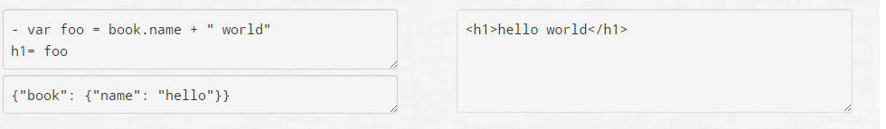

PUG
Pug - это препроцессор HTML и шаблонизатор, который был написан на JavaScript для Node.js.
Плюсы
- c pug мы получаем меньше кода, по сравнению с html
- работает emmet как и в чистом html
- форматирование кода происходит с помощью отступов
- отсутствуют закрывающиеся теги
- объявление id и class-ов сходно с написанием классов в css
- атрибуты тегов можно записывать через запятую или без нее, также можно разбивать на строки
- можно вставлять куски html непосредственно в pug
- можно использовать js для генерации html
- можно подключать миксины и шаблоны
- можно инклудить готовые куски кода
- при использовании pug можно хорошо распаралелить разработку проекта, что ведет за собой ускорение верстки
Начало разработки на pug.
Прежде чем начать кодить на pug, необходимо настроить Sublime Text 3.
Достаточно через Package Control установить пакет Pug.
собрать сборку с pug самому или выкачать существующую
Теги
По умолчанию текст в начале строки представляет собой HTML-тег. Теги с отступом вкладываются, создавая древовидную структуру HTML.
pug
ul li Item A li Item B li Item C
html
<ul> <li>Item A</li> <li>Item B</li> <li>Item C</li> </ul>
pug так же определяет самозакрывающиеся теги
pug
img input(type="text") br
html
<img/> <input type="text"> <br>
Непосредственно в Pug можно вставлять элементы в HTML синтаксисе
pug
p This is plain old <em>text</em> content.
html
<p>This is plain old <em>text</em> content.</p>
Атрибуты
pug
a(href='google.com') Google | | a(class='button' href='google.com') Google | | a(class='button', href='google.com') Google
html
<a href="google.com">Google</a> <a class="button" href="google.com">Google</a> <a class="button" href="google.com">Google</a>
Многострочные атрибуты
pug
input( type='checkbox' name='agreement' checked )
html
<input type="checkbox" name="agreement" checked="checked" />
Pug поддерживает switch case
pug
- var friends = 10
case friends
when 0
p you have no friends
when 1
p you have a friend
default
p you have #{friends} friends
html
<p>you have 10 friends</p>
Циклы
pug
ul
each val, index in ['zero', 'one', 'two']
li= index + ': ' + val
html
<ul> <li>0: zero</li> <li>1: one</li> <li>2: two</li> </ul>
pug
- var n = 0;
ul
while n < 4
li= n++
html
<ul> <li>0</li> <li>1</li> <li>2</li> <li>3</li> </ul>
Вставка JavaScript кода
Pug поддерживает вставку частей JavaScript кода в шаблоны.
pug
- for (var x = 0; x < 3; x++) li item
html
<li>item</li> <li>item</li> <li>item</li>
Комментарии
Существуют различные комментариев: те, которые будут отображаться после компиляции, и те, которые пропадут.
pug
// just some paragraphs //- will not output within markup p foo p bar
html
<!-- just some paragraphs--> <p>foo</p> <p>bar</p>
Блочные коментарии
pug
body
//-
Comments for your template writers.
Use as much text as you want.
//
Comments for your HTML readers.
Use as much text as you want.
html
<body> <!--Comments for your HTML readers. Use as much text as you want.--> </body>
Инклюды (Includes)
Pug имеет возможность вставки содержимого одного файла в другой файл Pug.
pug
// just some paragraphs //- will not output within markup p foo p bar
html
<!-- just some paragraphs--> <p>foo</p> <p>bar</p>
Минусы
-
если надо получить закоменченый кусок кода
нам надо записать код в следующем виде
-
сложность разбора чужого кода
-
нужны базовые знания js
предлагаю использовать такую структуру папок
- templates
- inc
- head.jade
- header.jade
- footer.jade
- mixin
- mixin.jade
- index.jade
- inner.jade
Теперь о самом Jade/Pug
Jade - синтаксис для Sublime Text
Прежде чем писать код в Sublime Text 3 необходимо настроить поддержку синтаксиса Jade.
Достаточно через Package Control установить пакет Jade.
Синтаксис
Синтаксис Jade напоминает синтаксис CSS.
Вот так мы определяем классы и id:
Вложенность соблюдается с помощью отступов. Также вложенность можно соблюдать с помощью конструкции {selector}: {selector}: и тд
Большие куски текста записываются так:
или так, но перед точкой не должно быть пробела:
Если надо отобразить именно последовательность символов #{}, то можно заэкранировать ее обратной косой чертой \#{}:
Стили в head
Если нам нужно прописать стили в <head>, мы можем это сделать с помощью конструкции style. и дальше пишем стили как в CSS.

Атрибуты
Все атрибуты прописываем в скобках через запятую или без нее (как кому будет удобней).
Есть некоторые особенности атрибутов в тегах <input> в Jade их можно разбивать на несколько строк. При переносе запятую можно опускать
Комментарии в Jade
Обычные комментарии прописываются 2 слешами (//), этот комментарий скомпилируется в HTML, если нам не нужно компилировать комментарий, но в исходниках он нам нужен пишем просто (//-), данная конструкция закомментирует, то что нам нужно и не будет отображатся в скомпиллированом коде.
Иногда нам нужно в <head> прописать условные комментарии для браузера Internet Explorer, мы можем это сделать с помощью следующей конструкции:

Если нам нужно закоментировать некий контент, вместо того, чтобы ставить // на каждой строке, мы можем поставить // сделать отступт и весь контент, что идет в пределах этого таба будет закоментирован.
Переменные
В Jade, как и в любом препроцессоре и шаблонизаторе есть переменные. Переменные мы можем объявить с помощью 2 способов. Первый способ объявить непосредственно в нашем файле, второй способ — вынести их в отдельный файл.
Переменные могут объявляться как до их вызова, так и после, также можно подключить переменные в отдельном файле, и с помощью include подключить к нашему шаблону.
Переменные мы можем использовать где угодно и где они нам могут понадобится.
Использование переменных в переменной:
Условия
if
When
Данная конструкция использует условия, но вместо if, else использует условие when
Each
и другой js
Миксины
С момощью миксин есть возможность каждый раз не повторять одинаковый код

Миксина навигации с активным классом
Миксина для ретины. Записываем только название имаги, а миксин делает все за нас ;-)
Инклюды
Инклюды позволяют статически подключать куски кода шаблонов Jade, находящиеся в отдельных файлах. Классический пример это подключение хедера и футера.
Например есть следующая структура папок:
и следующий layout.jade:
Extends
Extends позволяет не просто вставить контент с другой страницы, но и может заменить или переписать некоторые значения, которые объявлены повторно.
На примере мы видим, что страница layout.jade имеет свой title, который отличается от того, что указан на странице index.jade, в скомлированном html остался title с index.jade.
Отличие includes от extends в том, что первое не изменяет контент, а extends меняет.
Рекомендовано к прочтению:
- Официальный сайт Jade
- Онлайн компиляция Jade -> HTML
- Онлайн компиляции HTML ->Jade
- Jade - движок шаблонов
- Jade Syntax Documentation
- Туториал по Jade для начинающих
- Jade html Шаблонизатор Обзор